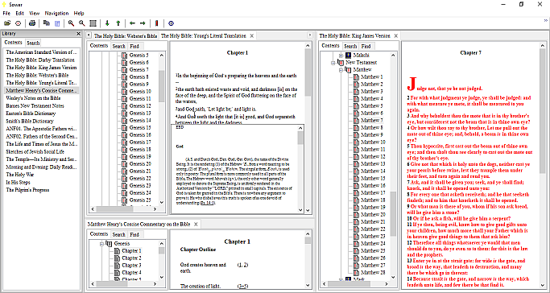

Sower Applications is a set of free applications that fall into 3
categories.
- Theological studies.
- Tools for users to edit themes, user interface translation files,
and configuration files for the software.
- Tools for creating modules.
Sower Applications are cross-platform and are currently available for
MSW, and Linux. The primary applications are Sower, and ThML Viewer
which are very similar programs. The primary difference is that Sower
uses pre-built modules for it's library source, while ThML Viewer uses
ThML files. And both feature:
- Bookmarks with personal notes, and text selections.
- Fast search routines, full library, and individual books.
- History list.
- AutoDef (Automatic Definition) which pulls up links, and also
monitors mouse and caret position in an attempt to identify
information that maybe useful to the user and displays the results in
a scrollable window above, or below the mouse pointer, or caret.
AutoDef windows can have AutoDef windows allowing users to follow a
chain of information without ever navigating from the page that is
currently displayed.
- Presentation, while content is the most important part of any
document presentation matters. Sower, and ThML Viewer attempt to
present documents as closely as possible to the original.
- A plug-in architecture that allows for improvements, and new
features to be added to the software without having to modify the
original software.
